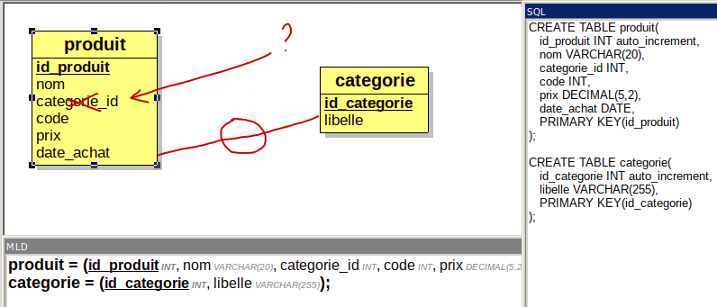

| produit |
|---|
| id_produit nom categorie code prix date_achat |
Insérer les enregistrements (occurrences tuples) ci dessous (on ne distingue pas le conditionnement Kg ou à la pièce pour le Prix ), la valeur de l’attribut (colonne) id_produit peut être différent car on ne gère pas les valeurs (AUTO_INCREMENT).
| id_produit | nom | categorie | code | prix | date_achat |
|---|---|---|---|---|---|
| 1 | Pommes | fruits | 01002 | 4,5 | 2021-10-1 |
| 2 | Poires | fruits | 01008 | 4 | 2021-09-30 |
| 3 | potiron | légumes | 02018 | 3 | 2021-09-21 |
| 4 | haricots | légumes | 02089 | 18 | 2021-10-2 |
| 5 | Cerises | fruits | 01068 | 15 | 2021-09-30 |
| 6 | Patates | légumes | 02068 | 3 | 2021-09-30 |
Pour un attribut (une colonne, un champ) de type
AUTO_INCREMENT, mettre la valeur null dans l’instruction
insert pour créer un enregistrement (une occurrence, un
tuple) . Ne jamais mettre de valeur entière, MySQL l’autorise, mais ce
n’est pas le cas des autres SGBDR.
SELECT * FROM produit ;Aidez vous des informations sur : https://www.w3schools.com/SQL/sql_and_or.asp
+---------+
| nom |
+---------+
| Pommes |
| Poires |
| Potiron |
| Patates |
+---------++---------+-------+
| nom | prix |
+---------+-------+
| Cerises | 15.00 |
+---------+-------+Aidez vous des informations sur : https://www.w3schools.com/SQL/sql_between.asp
+----------+
| nom |
+----------+
| Potiron |
| haricots |
| Patates |
+----------+
Aidez vous des informations sur : https://www.w3schools.com/SQL/sql_delete.asp
Sur le même principe, modifier le produit d’identifiant 5, rajouter 1€ au prix
Pour les plus rapides : Rajouter une semaine à la date d’achat, mais c’est bien plus compliqué ! https://www.w3schools.com/sql/func_mysql_date_add.asp
Dans l’attribut categorie, l’utilisateur écrit toujours un mot avec comme valeur : « fruits », « légumes »
Que se passe t’il si le mot “légumes” n’est pas écrit correctement ? :
| id_produit | nom | categorie | quantite | prix | date_achat |
|---|---|---|---|---|---|
| 7 | tomate | Légume | 5 | 4 | 2021-09-30 |
| 8 | salade verte | legumes | 5 | 1,5 | 2021-09-30 |
| 9 | radis noir | LEGUMES | 5 | 3,5 | 2021-09-30 |
Résultat possible :
+-----------------+-----------+
| nom | categorie |
+-----------------+-----------+
| Potiron | Légumes |
| haricots | Légumes |
| Pommes de Terre | Légumes |
| Salade verte | legumes |
| radis noir | LEGUMES |
+-----------------+-----------+contenu de la table produit
+------------+-----------------+-----------+--------------+----------+---------+------------+
| id_produit | nom | categorie | categorie_id | quantite | prix | date_achat |
+------------+-----------------+-----------+--------------+----------+---------+------------+
| 1 | Pommes | Fruits | NULL | NULL | 4.5000 | 2021-10-01 |
| 3 | Potiron | Légumes | NULL | NULL | 3.0000 | 2021-09-21 |
| 4 | haricots | Légumes | NULL | NULL | 18.0000 | 2021-10-02 |
| 5 | Cerises | Fruits | NULL | NULL | 16.0000 | 2021-09-30 |
| 6 | Pommes de Terre | Légumes | NULL | NULL | 3.5000 | 2021-09-30 |
| 7 | Poires | Fruits | NULL | NULL | 4.0000 | 2021-09-30 |
| 8 | tomate | Légume | NULL | 5 | 4.0000 | 2021-09-30 |
| 9 | Salade verte | legumes | NULL | 5 | 1.5000 | 2021-09-30 |
| 10 | radis noir | LEGUMES | NULL | 3.5 | 5.0000 | 2021-09-30 |
+------------+-----------------+-----------+--------------+----------+---------+------------+``Pour faire référence à la catégorie de légumes, il est préférable d’utiliser une autre table pour éviter les ambiguïtés et éviter de dupliquer des informations dans une même table

Sur le même principe, on désire enregistrer le nom du fournisseur, son adresse, son téléphone et minimiser les erreurs si une des informations concernant les fournisseurs change.
Proposer une solution pour sauvegarder ces informations et modifier votre schéma en conséquence